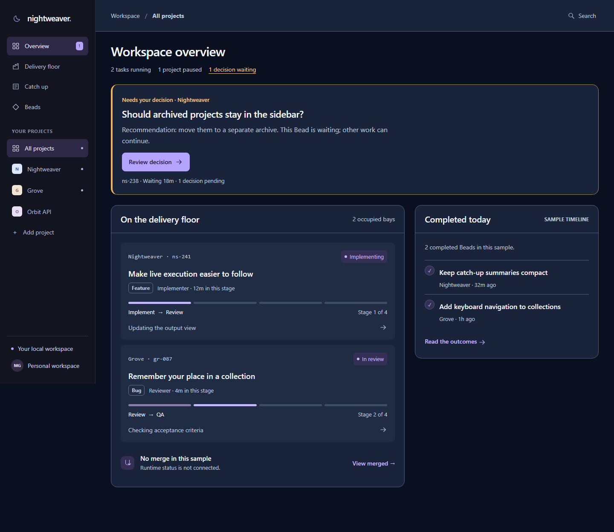
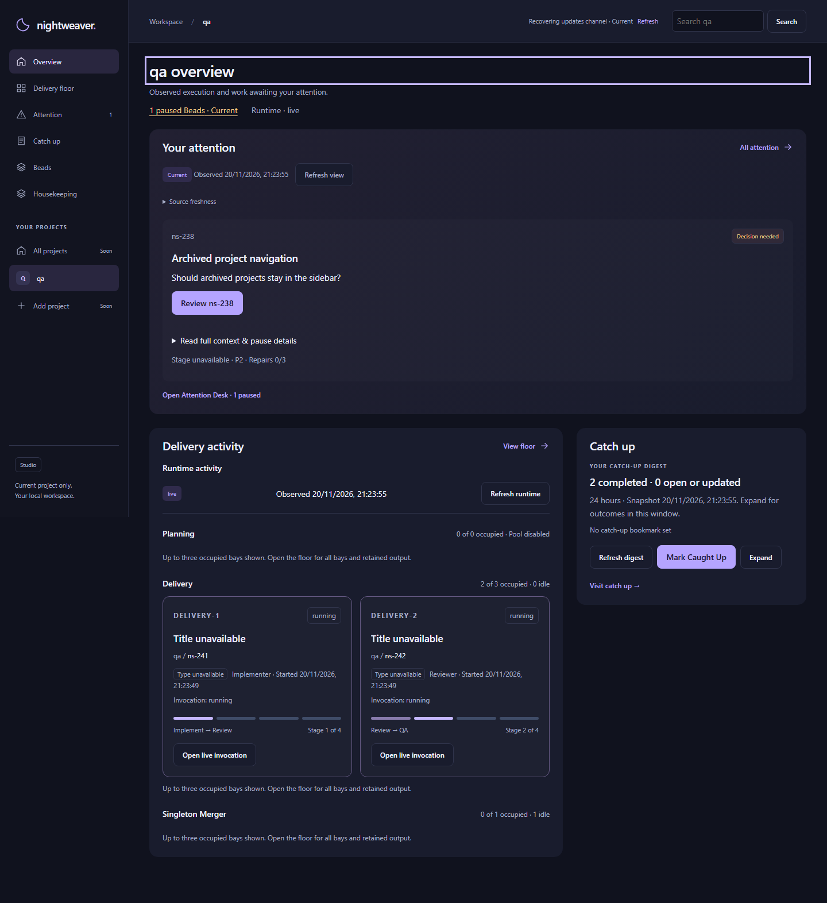
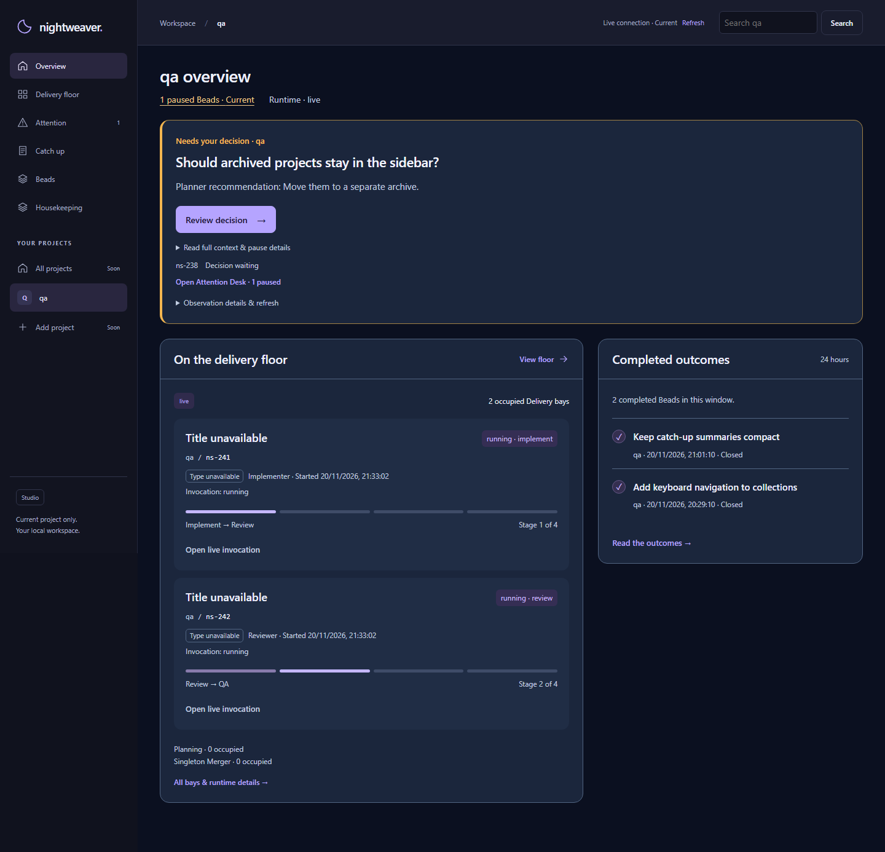
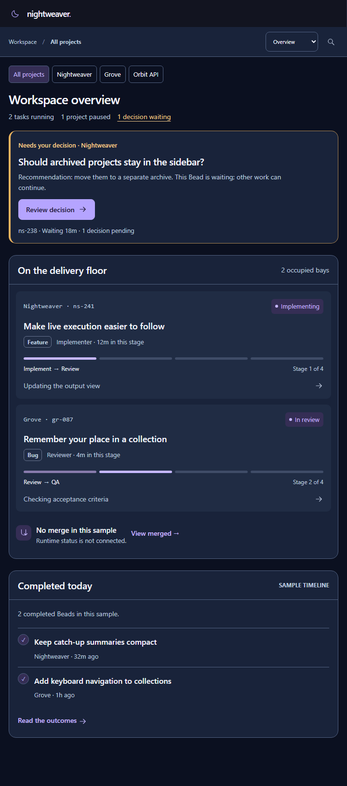
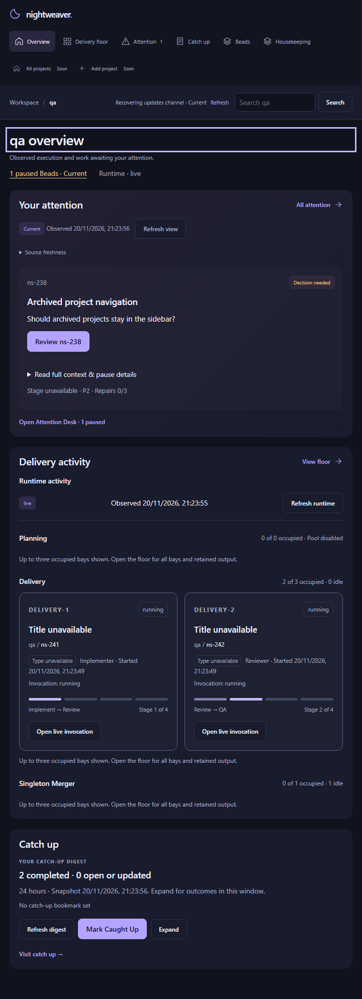
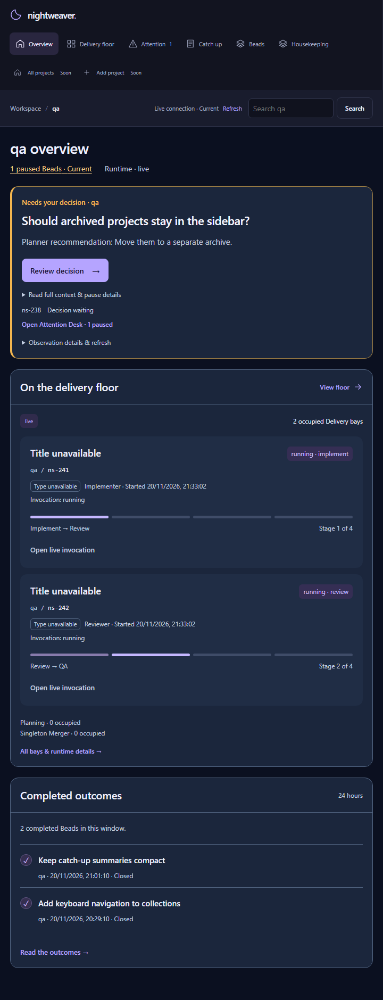
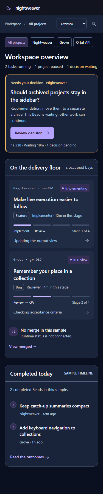
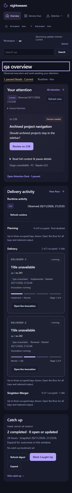
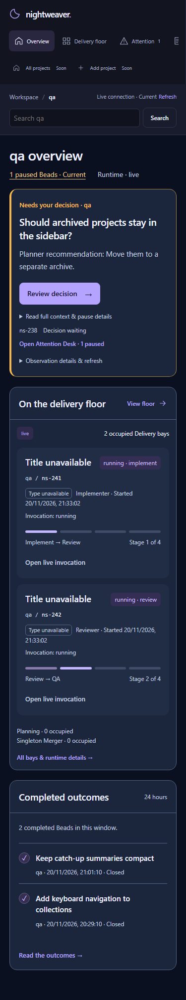

Each column shows a whole page captured with a 900px-high viewport. Target contains prototype navigation and sample metadata. Before and candidate share the same controlled resource fixture: one decision, two Delivery bays and two closed outcomes. Candidate preserves current-project navigation, truthful title/type fallbacks, source details and exact invocation access.








